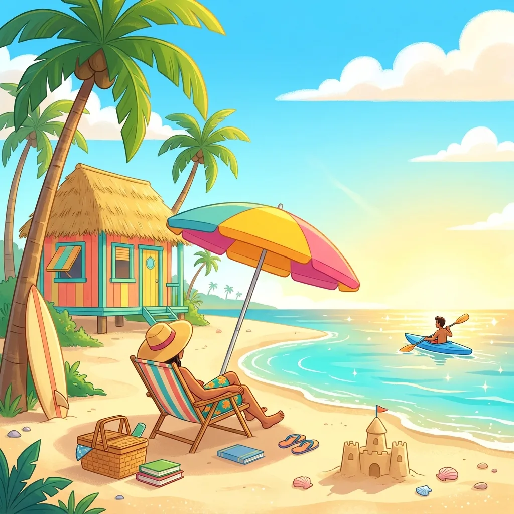
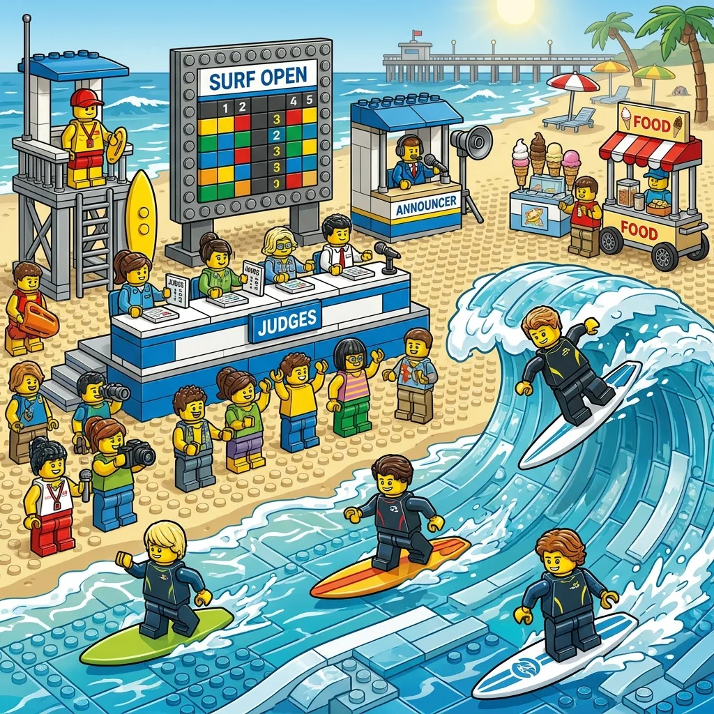

Summer Boredom Busters You Can Print in 5 Minutes
Summer boredom has a specific schedule: it arrives around 2pm, when it's too hot to go back outside, the pool bag is still wet, and dinner is hours away. Pinterest will offer you boredom busters that require pool noodles, shaving cream, and a level of parental participation that defeats the purpose. This guide is the other kind: things you can print in five minutes, hand over, and walk away from.

The 5-minute rule
A boredom buster only counts if it goes from "I'm bored" to "child occupied" in five minutes, with no shopping, no setup, and no you. That rules out most crafts (you are the craft), most science experiments (you are the lab tech), and anything involving glitter (you are the cleanup crew). It leaves paper: puzzles, coloring, drawing prompts — printed on demand, in the theme your particular child is currently obsessed with.
The quiet-hour puzzle pack
The single most reliable structure for hot afternoons is a daily quiet hour with a fresh paper pack: two or three spot-the-difference puzzles at the right difficulty, a coloring page, and a drawing prompt. The trick that makes it survive all summer is freshness — the same puzzle book goes stale by the second week of June, but generated puzzles are new every single day, so Tuesday's pack is never Monday's reheated. (Full quiet-time playbook, including the ranking of activities by realistic quiet minutes, is in our quiet time guide.)
The boredom jar, upgraded with puzzle slips
The classic boredom jar — "I'm bored" means you draw a slip and do what it says — usually dies because half the slips are chores in disguise. The upgrade: fold printed puzzles into quarters and stuff the jar with those, mixed with a few activity slips ("build the tallest thing you can out of cups", "draw our house from memory"). Drawing a mystery puzzle out of a jar is, to an eight-year-old, meaningfully more exciting than being handed the same sheet. Refill the jar on Sunday while the printer runs — five minutes, whole week covered.
Themes are the secret weapon
Boredom is half novelty problem. The fix costs nothing: rotate themes. Ocean puzzles during pool week, space puzzles after the planetarium trip, farm scenes for the fair, garden scenes when the tomatoes come in. Matching the paper to the season's obsessions makes each pack feel new even though the format never changes — and when all the differences are found, the sheet doubles as a coloring page, which quietly buys a second round of quiet.
Zero-supply mix-ins
Between paper rounds, the no-materials classics hold the line: the alphabet hunt (find something in the house starting with every letter), sock basketball with a laundry basket, "draw this room in one minute" speed-sketching, and fortune tellers folded from the finished puzzle sheets — recycling as entertainment. For travel days in the middle of summer, the same paper strategy scales to the car and the plane: see the road trip guide and the airplane kit.
Free downloads by age
All from the same free generator, no signup: ages 3–5 — easy mode, five bold differences, one theme per day (see the preschool guide for how to play it together); ages 6–8 — medium mode, print two different themes so there's a choice to make; ages 9–12 — hard mode, two copies of the same puzzle, sibling race, loser refills the boredom jar. Answer keys print on their own page, so disputes settle themselves.

Unlimited free spot-the-difference puzzles in four summer-friendly themes, with answer keys. Print a week's worth in one go.
Open the free generator
FAQ
How do I keep kids busy in summer without screens? Structure beats willpower: a predictable daily quiet hour, a boredom jar for the random gaps, and a fresh-paper habit so the materials never go stale. Screens then become one scheduled block instead of the default answer to every "I'm bored."
What do these cost? Paper and ink. Every puzzle here is genuinely free and unlimited — print twenty a day all summer if it helps. The generator also has large-print and harder adult-level settings, which quietly solves grandparent-visit weeks too (grandparents, it turns out, do not consider themselves above a spot-the-difference race — our adult brain games guide makes the case).